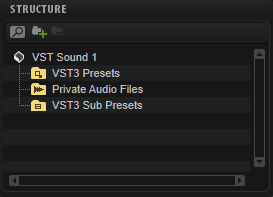

/ HALion Developer Resource / HALion Tutorials & Guidelines / Guidelines /
MediaBay Guideline
On this page:
With the help of MediaBay attributes, you can quickly and easily browse and search presets. Attributes are descriptive keywords that you can assign to your presets. Good search results in the MediaBay highly depend on accurately set attributes. When you specify attributes for your final HALion Sonic program presets, you should follow the guideline below. This ensures an equal quality of the attributes and, therefore, improves browsing and searching in the MediaBay.
❕ Please use the MediaBay of HALion Sonic to specify attributes for your presets. Do not use the MediaBay of Cubase, because it contains attributes that are not supported by HAlion Sonic presets.
Library Creator Properties
The following attributes are assigned automatically to all your presets when you build your libraries using the Library Creator:
| Library Creator Property | MediaBay Attribute | Description |
|---|---|---|
| Long Name | Library Name | If the Long Name is too long, the Name property is used instead. |
| Manufacturer | Library Manufacturer | Your name or company name. |
| Family | PlugIn Name | The target plug-in that the library was designed for. |
Any other attributes must be set manually.
Which Media Files Must Get Attributes?
- The MediaBay scans only those VST3 presets that are located in the VST3 Presets folder of your library. This means that you must specify attributes for all VST3 presets that are located in this folder. Otherwise, the users cannot find the presets. In the Library Creator, a warning message is displayed if attributes were not set.
- The subpresets in the VST3 Sub Presets folder are not scanned by the MediaBay and do not need attributes. These subpresets are loaded via a script and not with the MediaBay.
- All samples of your library are located in a Private Audio folder. Private means that the MediaBay does not scan these samples and you do not need to add attributes to them. The samples are loaded together with the VST3 preset or via a script.

VST3 Preset Attribute Conventions
The different preset categories require different sets of attributes. This guideline gives you advice on how to add the correct attributes.
- For regular instrument presets, the common attributes should be set.
- For categories like Drum&Perc > Beats, for example, you should add additional attributes.
Common Attributes
The following MediaBay attributes must be set for each preset manually:
| MediaBay Attribute | Description |
|---|---|
| Author | The name of the company or of the sound designer. |
| Category/Sub Category | Use this attribute to classify the sound. If you set the Sub Category first, the Category is set automatically. |
| Properties | See Properties, Moods and Articulations. |
| Moods | See Properties, Moods and Articulations. |
| Articulations | See Properties, Moods and Articulations. |
| Rating | A rating of three stars is recommended as starting point for presets. The users can then lower or raise the rating. |
| Name | This attribute is defined with the preset file name when the preset is saved. |
The following MediaBay attributes are set automatically by the Library Creator. You must set the corresponding properties in the Library Creator before you build the library.
| MediaBay Attribute | Description |
|---|---|
| Library Manufacturer | This attribute is defined with the Manufacturer property in the Library Creator. |
| Library Name | This attribute is defined with the Long Name property in the Library Creator. |
| PlugIn Name | This attribute is defined with the Family property in the Library Creator. |
Properties, Moods and Articulations
Properties, Moods and Articulations describe the character of a sound with labels. As soon as you type, you get a suggestion of labels. You can select a suggested label to autocomplete it. This also helps to avoid spelling mistakes. You should at least set some Properties that describe the sound as you hear it. Moods and Articulations are optional. The difference between Properties and Moods is that the Properties describe a sound acoustically without rating it. The Moods describe a sound emotionally and therefore interpret and rate it. Articulations describe the way the sound or instrument is played, as a composer would describe it.
The libraries of FM Lab and Tales both use Properties. FM Lab even uses Articulations on some presets. You can use these two libraries as examples for your own productions.

- Set the Properties, Moods and Articulations so that they describe the preset as precisely as possible.
- Labels that do not match what you hear should be avoided.
- Fewer labels that perfectly match are much better than too many labels that only partially match.
- Use the autocomplete feature to avoid spelling mistakes.
❕ Presets that use an arpeggiator should not get the Category Synth Lead > Arpeggio by default. You should use this Category only for classic arpeggio sounds. If you have a synth bass with a step sequencer or arpeggio, you should set the Category Bass > Synth Bass. To indicate that the preset contains an arpeggio or a sequence, set Arpeggio or Sequenced as label for the Properties, instead.
Additional Attributes
These attributes can be set in addition, e.g., for VST3 presets with the Category Drum&Perc > Beats.
| MediaBay Attribute | Description |
|---|---|
| Signature | The time signature as numerator and denominator. |
| Style | Use this attribute to classify the musical style. If you set the Sub Style first, the Style is set automatically. |
| Sub Style | Use this attribute to classify the musical style. If you set the Sub Style before the Style, the Style is set automatically. |
| Tempo | The tempo in beats per minute (bpm). |
Special Attributes
These attributes are mainly needed to display information in HALion's Browser.
| MediaBay Attribute | Description |
|---|---|
| Bars & Beats | The number of bars and beats in a loop, for example. This attribute is set for samples, not for presets. |
| Comment | Use this attribute to add a comment to each preset. |
| Family Name | This attribute is used for sample sets. Samples with the same Family Name belong to the same sample set. |
| Follow Tempo | This attribute defines whether a loop uses AudioWarp to follow the host tempo. |
| GM Sound | This attribute defines the program number of a GM Sound. |
| Key | The key in which a loop was written, for example, a loop with chords or a loop with a melody. |
| Keywords | This attribute is set by HALion when you import third-party sampler programs. |